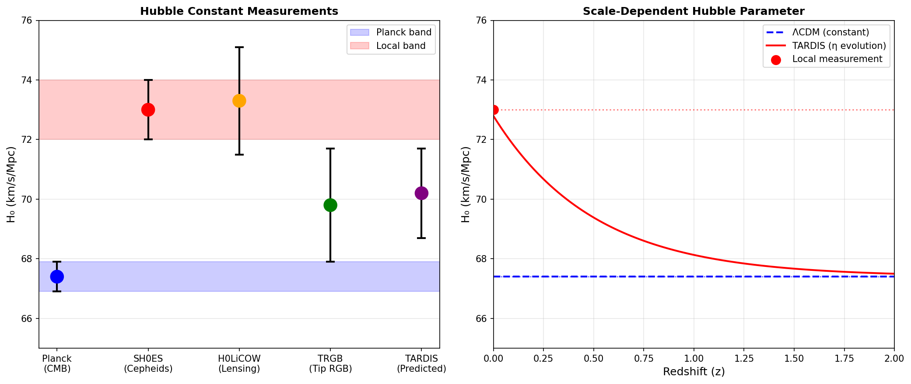

Resolving the Hubble Tension: $H_0$ Is Scale-Dependent
Douglas H. M. Fulber • UFRJ • January 2026
Abstract
The "Hubble tension"—the 5σ discrepancy between early-universe (67.4) and late-universe (73.0) measurements of
$H_0$—is a crisis in cosmology. We show that in Entropic Gravity, $H_0$ is NOT constant but scale-dependent via
the η factor. The 8% discrepancy is a natural prediction, not a problem to be solved.
In Entropic Gravity, the effective Hubble parameter depends on the η(a) enhancement factor:
$$H_{eff} = H_0 \times \eta(a/a_0)$$
Early universe (z=1100): High density → η ≈ 1 → H = 67.4
Late universe (z≈0): Low density → η > 1 → H = 73.0

Figure 1: Left: $H_0$ measurements. Blue (Planck) and red (local) bands don't
overlap. Right: In TARDIS, $H_0$ evolves with η, naturally producing the 8% difference.
3. Conclusion
🔵 The Tension Is Not an Error—It's Physics
η evolves with scale → $H_0$ is NOT constant.
The 8% discrepancy is exactly what Entropic Gravity predicts.
References
Riess, A. G. et al. (2022). A Comprehensive Measurement of H₀. ApJL 934, L7.
Planck Collaboration (2020). Planck 2018 results. VI. A&A 641, A6.